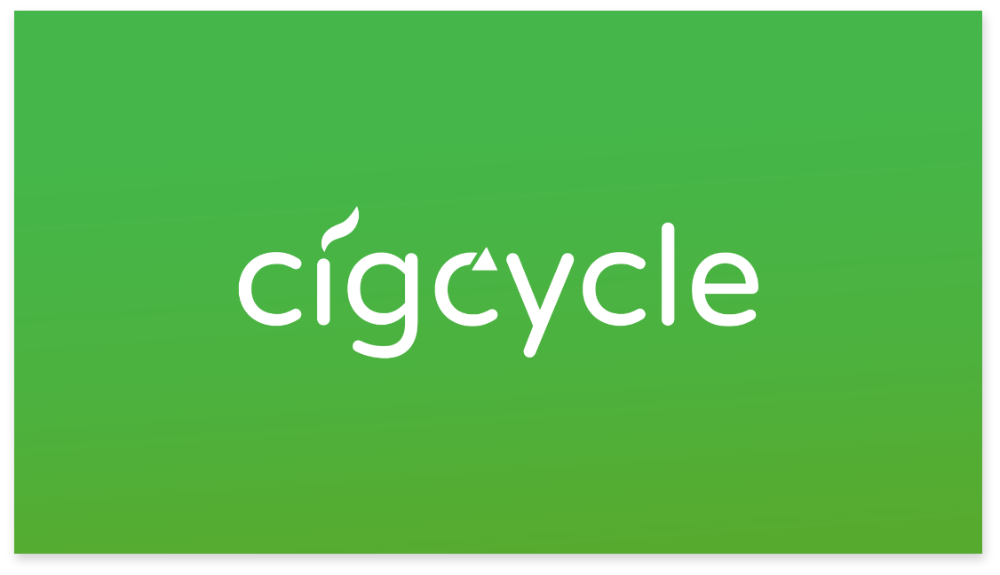
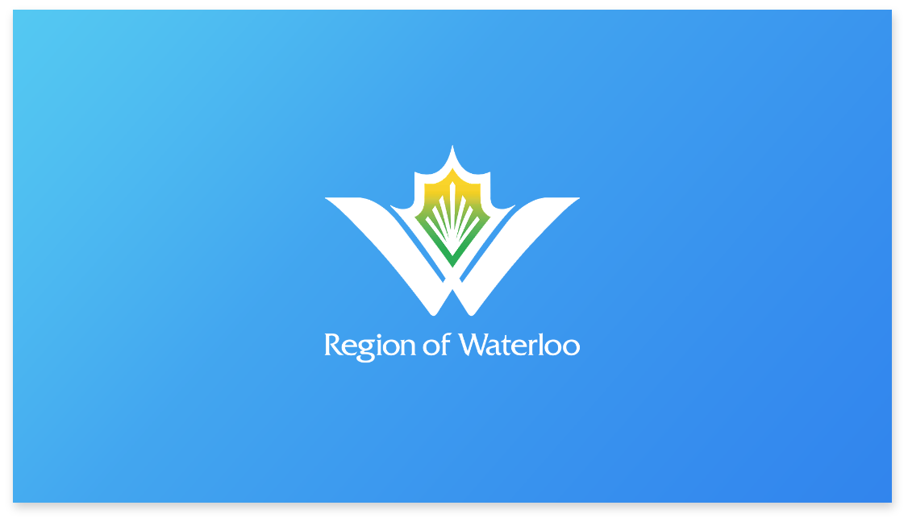

I'm Sidhant but most people call me Sid, and I pay attention to the smallest design decisions that have to do with the biggest impact.
Projects
February 2019
Creating a web solution for a retail destination that educates and informs customers on the social innovation taking place at Enactus Laurier Brantford.
April 2019
Creating a web solution for citizens to report problems within the region. Using the lean GV sprint method over the span of seven weeks.
Although I have taken some knowledge and experience in web design and development, I wanted to collaborate on creating this website to showcase my ability to communicate with an intermediate developer and also provide an opportunity for that developer to showcase their skills and abilities. This goes hand in hand with my philosophy of, “Collaboration > Competition.” Working together you can accomplish a lot more than simply butting heads.
Kennedy Vandel
3rd year Computer Science student at Oregon State University
Fun Fact
Kennedy and I were introduced to each other in a Skype call through a friend of a friend while playing Call of Duty. At the time we were in high-school, and have been best friends ever since.